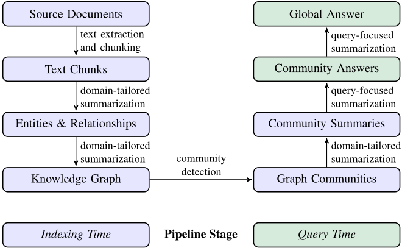
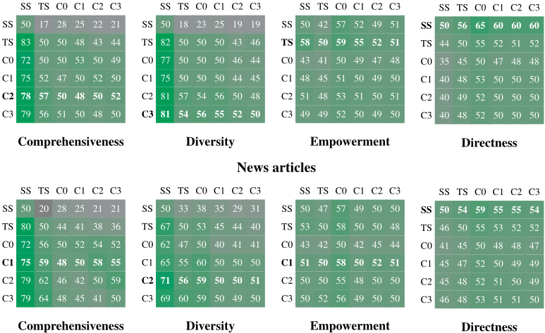
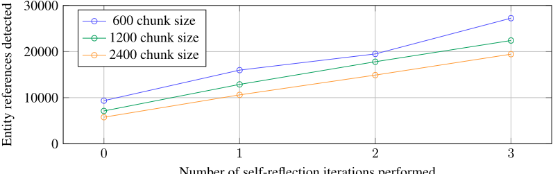
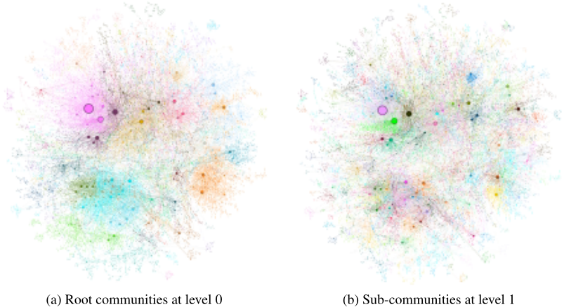

从局部到全局：一种面向查询聚焦摘要的 GraphRAG 方法
传统 vector RAG 只能回答可定位到少量文档的局部问题，无法应对'整个语料库的主要主题是什么'这类需要全局理解的 sensemaking 问题，而既有查询聚焦摘要（QFS）方法又无法扩展到 RAG 规模的语料。GraphRAG 先用 LLM 从源文档抽取实体、关系与 claim 构建知识图谱，再用 Leiden 算法做层次化社区检测并自底向上预生成社区摘要；查询时对各社区摘要以 map-reduce 方式并行生成部分答案后归并为全局答案。在两个约百万 token 的真实数据集上，GraphRAG 的答案 comprehensiveness 胜率达 72-83%、diversity 达 62-82%，显著优于 vector RAG；root 级社区摘要还能以 9x-43x 更少的 token 支持高效迭代问答。论文同时提出 persona 驱动的自适应基准构造、LLM-as-a-judge 头对头评测与 claim 抽取交叉验证，为无金标答案场景提供了可直接复用的评测方法。
传统 vector RAG 只支持可由少量检索记录回答的局部问题，无法对整个语料库做全局 sensemaking（如'数据集的主要主题是什么'），因为这类问题本质是查询聚焦摘要（QFS）任务而非显式检索任务；而既有 QFS 方法又无法扩展到典型 RAG 系统索引的文本量级。论文要补齐'全局性问题 + 大规模语料'这一空白。
GraphRAG 分索引与查询两阶段。索引阶段：将文档切分为 text chunk（论文用 600 token、100 token 重叠），用 LLM 配合领域 few-shot exemplar 抽取实体、关系与 claim，并用 self-reflection 'gleaning' 提示技术让 LLM 自查遗漏实体以支持更大 chunk；将重复抽取的元素聚合为知识图谱（重复关系计为边权），再用 Leiden 算法层次化社区检测，自底向上递归生成各层级社区摘要。查询阶段：对选定社区层级的全部摘要做 map-reduce——并行生成部分答案后归并为全局答案，答案需带 [Data: Reports (ids)] 形式的引用 grounding。评测方法上：用 LLM 基于 persona 生成假设用户与任务再构造全局问题（每数据集 125 题），以 LLM-as-a-judge 按 comprehensiveness、diversity、empowerment 及控制指标 directness 做头对头比较，并用 Claimify 抽取可验证 claim 做量化交叉验证。
图索引规模：Podcast 数据集 8,564 节点/20,691 边，News 数据集 15,754 节点/19,520 边
对 vector RAG 的头对头胜率：comprehensiveness 在 Podcast 72-83%（p<.001）、News 72-80%（p<.001）；diversity 在 Podcast 75-82%（p<.001）、News 62-71%（p<.01）
社区摘要对比无图 map-reduce 源文本摘要（TS）：comprehensiveness 胜率 57%（Podcast 中间层，p<.001）与 64%（News 低层，p<.001）；diversity 胜率 57%（p=.036）与 60%（p<.001）
token 成本：低层社区摘要（C3）比 TS 少 26-33% context tokens，root 级（C0）少 97% 以上（每查询 token 仅为 TS 的 1/9-1/43），且 root 级对 vector RAG 仍保持 72% comprehensiveness 与 62% diversity 胜率
claim 交叉验证：所有全局条件与 TS 的 comprehensiveness 均显著高于 vector RAG（p<.05）；LLM 判定与 claim 指标在非平局比较中 comprehensiveness 一致率 78%、diversity 69-70%
上下文窗口实验：8k 窗口在 comprehensiveness 上全面优于 16k/32k/64k（平均胜率 58.1%），最终统一采用 8k
chunk 大小实验：600 token chunk 抽取的实体引用约为 2400 token 的两倍；配合 self-reflection 'gleaning' 可在大 chunk 下不损失抽取质量
索引构建耗时：Podcast 数据集（约 100 万 token，1669 个 600-token chunk）在 gpt-4-turbo 上耗时 281 分钟
区别于 vector RAG 的局部语义检索，也区别于既有层次索引摘要方法，GraphRAG 的核心新意是利用图的模块性：先用 LLM 构建实体知识图谱，再用层次化社区检测形成主题分区，递归生成社区摘要作为'self-memory'式全局索引，使 QFS 能扩展到 RAG 规模的语料。评测侧同样有新意：提出 persona 驱动的自适应基准构造（避免直接从语料生成题目以保证公平）与基于 claim 抽取的量化验证，针对无金标答案的全局 sensemaking 问题。
相关度级别：high
命中能力域：3.1 上下文工程与记忆 | 3.2 提示工程 | 3.5 评测与可靠使用
理由：GraphRAG 直接命中 3.1 的核心技术：它是完整的 RAG/检索增强方案，用知识图谱+层次社区摘要做结构化上下文组织，并系统实验了 chunk 大小与查询时上下文窗口大小（8k 优于更大窗口）对质量与成本的影响。索引与答案生成环节大量使用 few-shot exemplar 的 in-context learning、self-reflection 等提示技术并公开了完整 prompt 模板（含引用 grounding 规则），命中 3.2。其 persona 驱动的自适应基准、LLM-as-a-judge 头对头评测与 claim 交叉验证，为团队'无金标答案如何评测产出质量'提供了可直接复用的方法学，token 成本分析也对应 3.5 的成本与效率关注。与 3.3/3.4（Agent 架构、多智能体）无实质关联。
建议动作：深入精读并做内部分享
arXiv:2404.16130v2 [cs.CL] 19 Feb 2025
Jonathan Larson 1
1 微软研究院
2 微软战略任务与技术部 3
微软首席技术官办公室
{ daedge,trinhha,newmancheng,joshbradley,achao,moapurva, steventruitt,dasham,robertness,jolarso } @microsoft.com
† 这些作者对本工作贡献相同
利用检索增强生成（RAG）从外部知识源中检索相关信息，使大语言模型（LLMs）能够回答针对私有和/或此前未见过的文档集合的问题。然而，RAG 在面向整个文本语料库的全局性问题上会失效，例如“数据集中的主要主题是什么？”，因为这类问题本质上是一种查询聚焦摘要（QFS）任务，而非显式的检索任务。与此同时，先前的 QFS 方法无法扩展到典型 RAG 系统所索引的文本规模。为了结合这两种截然不同的方法的优势，我们提出了 GraphRAG，一种基于图的私有文本语料库问答方法，其能够随用户问题的普适程度和源文本数量进行扩展。我们的方法使用 LLM 分两个阶段构建图索引：首先从源文档中推导出实体知识图谱，然后为所有紧密相关的实体群组预生成社区摘要。给定一个问题，先利用每个社区摘要生成部分回答，随后将所有部分回答再次汇总为面向用户的最终回答。对于一类针对百万 token 量级数据集的全局性意义建构问题，我们表明 GraphRAG 在生成答案的全面性和多样性方面均显著优于传统的 RAG 基线。
检索增强生成（RAG）（Lewis et al., 2020）是一种成熟的方法，用于让大语言模型（LLM）基于规模过大、无法全部容纳于语言模型上下文窗口中的数据来回答查询；所谓上下文窗口，是指 LLM 一次能够处理的最大 token 数量（文本单元）（Kuratov et al., 2024; Liu et al., 2023）。在经典的 RAG 设置中，系统可以访问一个由文本记录组成的大型外部语料库，并检索出一个记录子集，这些记录单独来看均与查询相关，且总体上规模足够小，能够放入 LLM 的上下文窗口。随后，LLM 基于查询和检索到的记录生成回答（Baumel et al., 2018; Dang, 2006; Laskar et al., 2020; Yao et al., 2017）。这种我们统称为向量 RAG（vector RAG）的传统方法，对于能够用局部存在于少量记录中的信息来回答的查询效果良好。然而，向量 RAG 方法无法支持意义建构（sensemaking）类查询，即需要对整个数据集形成全局理解的查询，例如“过去十年间，跨学科研究影响科学发现的方式有哪些关键趋势？”
意义建构任务需要对“联系（可以存在于人物、地点和事件之间）”进行推理，以便预测其发展轨迹并有效采取行动（Klein et al., 2006）。诸如 GPT（Achiam et al., 2023; Brown et al., 2020）、Llama（Touvron et al., 2023）和 Gemini（Anil et al., 2023）等 LLM，在科学发现（Microsoft, 2023）和情报分析（Ranade and Joshi, 2023）等复杂领域中擅长开展意义建构。给定一个意义建构查询和一篇包含一组隐式且相互关联的概念的文本，LLM 能够生成回答该查询的摘要。然而，当数据量大到需要采用 RAG 方法时，挑战便随之而来，因为向量 RAG 方法无法支持针对整个语料库的意义建构。
在本文中，我们提出 GraphRAG——一种基于图的 RAG 方法，能够对大型文本语料库的整体进行意义建构。GraphRAG 首先使用 LLM 构建一个知识图谱，其中节点对应语料库中的关键实体，边表示这些实体之间的关系。接着，它将该图划分为由紧密相关实体组成的社区层次结构，然后使用 LLM 生成社区级摘要。这些摘要遵循所提取社区的层次结构、以自底向上的方式生成，较高层级的摘要递归地纳入较低层级的摘要。这些社区摘要共同提供了对整个语料库的全局描述与洞察。最后，GraphRAG 通过对社区摘要进行 map-reduce 处理来回答查询；在 map 步骤中，各摘要被独立且并行地用于提供针对查询的部分回答，随后在 reduce 步骤中，这些部分回答被合并起来，用于生成最终的全局回答。
GraphRAG 方法及其在整个语料库上执行全局性意义建构（global sensemaking）的能力构成了本工作的主要贡献。为了展示这一能力，我们开发了一种 LLM-as-a-judge 技术的新颖应用（Zheng et al., 2024），该技术适用于针对宽泛议题和主题、且不存在标准答案的问题。这一方法首先使用一个 LLM 基于语料库特定的用例生成一组多样化的全局性意义建构问题，然后再使用第二个 LLM 依据预定义的标准（定义见第 3.3 节）对两个不同 RAG 系统的回答进行评判。我们使用这一方法在两个具有代表性的真实世界文本数据集上将 GraphRAG 与向量 RAG 进行了比较。结果表明，当使用 GPT-4 作为 LLM 时，GraphRAG 大幅优于向量 RAG。
GraphRAG 已作为开源软件发布于 https://github . com/microsoft/graphrag。此外，GraphRAG 方法的多个版本也已作为多个开源库的扩展提供，包括 LangChain（LangChain, 2024）、LlamaIndex（LlamaIndex, 2024）、NebulaGraph（NebulaGraph, 2024）和 Neo4J（Neo4J, 2024）。
从自然语言文本语料库中抽取知识图谱的方法包括规则匹配、统计模式识别、聚类以及嵌入表示（Etzioni et al., 2004; Kim et al., 2016; Mooney and Bunescu, 2005; Yates et al., 2007）。GraphRAG 属于较新的一类研究，即利用 LLM 进行知识图谱抽取（Ban et al., 2023; Melnyk et al., 2022; OpenAI, 2023; Tan et al., 2017; Trajanoska et al., 2023; Yao et al., 2023; Yates et al., 2007; Zhang et al., 2024a）。它也充实了日益增多的、将知识图谱用作索引的 RAG 方法（Gao et al., 2023）。一些技术将子图、图的元素或图结构的属性直接置于提示中（Baek et al., 2023; He et al., 2024; Zhang, 2023），或将其作为生成输出的事实依据（Kang et al., 2023; Ranade and Joshi, 2023）。另一些技术（Wang et al., 2023b）则利用知识图谱来增强检索：在查询时，由基于 LLM 的 Agent 动态遍历一个图，其中节点表示文档元素（如段落、表格），边则编码词汇与语义相似性或结构关系。GraphRAG 与上述方法的不同之处在于，它关注的是图在这一背景下一个此前未被探索过的特性：图固有的模块性（Newman, 2006），以及将图划分为由紧密相关节点构成的嵌套模块化社区的能力（例如 Louvain, Blondel et al. 2008; Leiden, Traag et al. 2019）。具体而言，GraphRAG 利用 LLM 创建跨越该社区层次结构的摘要，从而递归地生成越来越全局化的摘要。
针对开放域问答（open-domain question answering）已有许多基准测试（benchmark）数据集，包括 HotPotQA (Yang et al., 2018)、MultiHop-RAG (Tang and Yang, 2024) 以及 MT-Bench (Zheng et al., 2024)。然而，这些基准测试面向的是向量 RAG 的性能，即它们评估的是显式事实检索方面的表现。在本工作中，我们提出了一种生成问题集合的方法，用于评估针对整个语料库的全局意义建构（global sensemaking）能力。我们的方法与某些利用语料库来生成问题的 LLM 方法相关，这类问题的答案即为语料库的摘要，例如 Xu and Lapata (2021) 的工作。然而，为了实现公平的评估，我们的方法避免直接从语料库本身生成问题（作为一种替代实现方式，可以使用从后续图抽取和答案评估步骤中留出的语料库子集）。
自适应基准测试（adaptive benchmarking）是指动态生成针对特定领域或用例定制的评估基准测试的过程。近期的工作已将 LLM 用于自适应基准测试，以确保相关性、多样性以及与目标应用或任务的一致性 (Yuan et al., 2024; Zhang et al., 2024b)。在本工作中，我们提出了一种自适应基准测试方法，用于为 LLM 生成全局意义建构查询。我们的方法建立在基于 LLM 的人设（persona）生成的先前工作之上，在这类工作中，LLM 被用于生成多样且真实的人设集合 (Kosinski, 2024; Salminen et al., 2024; Shin et al., 2024)。我们的自适应基准测试流程利用人设生成来创建能够代表真实世界中 RAG 系统使用情况的查询。具体而言，我们的方法利用 LLM 推断可能使用 RAG 系统的潜在用户及其用例，并由这些用例指导生成针对特定语料库的意义建构查询。
我们的评估依赖于 LLM 来评估 RAG 系统对所生成问题的回答效果。先前的工作已经表明 LLM 是自然语言生成的良好评估器，其中包括一些 LLM 评估可与人类评估相媲美的工作 (Wang et al., 2023a; Zheng et al., 2024)。一些先前的工作提出了让 LLM 量化生成文本质量的准则，例如“流畅度” (Wang et al., 2023a)。其中一些准则是针对向量 RAG 系统的通用准则，与全局意义建构无关，例如“上下文相关性”、“忠实度”和“答案相关性” (RAGAS, Es et al. 2023)。在缺乏评估金标准的情况下，可以通过提示 LLM 对来自两个不同竞争模型的生成结果进行比较，来量化在某一给定准则上的相对性能（LLM-as-a-judge，(Zheng et al., 2024)）。在本工作中，我们设计了用于评估 RAG 针对全局意义建构问题所生成答案的准则，并采用比较方法评估我们的结果。我们还利用由 LLM 提取的可验证事实陈述（即“断言”（claims））所导出的统计数据来验证结果。

图 1 展示了 GraphRAG 方法与流水线的高层数据流。在本节中，我们描述每个步骤的关键设计参数、技术和实现细节。
首先，将语料库中的文档切分为文本块。大语言模型（LLM）从每个文本块中提取信息，以供下游处理使用。文本块大小的选择是一项基础性的设计决策：较长的文本块在进行此类提取时所需的 LLM 调用次数更少（从而降低成本），但会导致文本块中较早出现的信息的召回率下降（Kuratov et al., 2024; Liu et al., 2023）。相关提示以及召回率-精确率权衡的示例请参见 A.1 节。
在这一步中，通过提示让 LLM 从给定文本块中提取重要实体的实例以及实体之间的关系。此外，LLM 还会为这些实体和关系生成简短的描述。为了加以说明，假设某个文本块包含以下文本：
4
NeoChip（NC）的股票在 NewTech 交易所上市交易的第一周便大幅飙升。然而，市场分析师提醒，这家芯片制造商的公开亮相未必能反映其他科技公司首次公开募股（IPO）的走势。NeoChip 此前是一家私营实体，于 2016 年被 Quantum Systems 收购。这家创新型半导体公司专注于为可穿戴设备和物联网（IoT）设备提供低功耗处理器。
对 LLM 进行提示，使其提取出以下内容：
通过为上下文学习（in-context learning）选择适合特定领域的少样本示例（few-shot exemplars），这些提示可以针对文档语料库所属的领域进行定制（Brown et al., 2020）。例如，我们的默认提示提取的是人物、地点、组织等广义的“命名实体”，具有普遍适用性；而具有专业知识的领域（如科学、医学、法律）则可以从针对这些领域专门设计的少样本示例中获益。
还可以通过提示让 LLM 提取关于所检测到实体的声明（claims）。声明是关于实体的重要事实性陈述，例如日期、事件以及与其他实体的交互。与实体和关系一样，上下文学习示例可以提供领域特定的指导。从示例文本块中提取出的声明描述如下：
有关实体和声明提取所用的提示以及我们实现方式的详细信息，请参见附录 A。
使用 LLM 提取实体、关系和声明是一种抽象式摘要（abstractive summarization）的形式——这些是对概念的有意义的总结，就关系和声明而言，这些概念可能在文本中并未被明确陈述。实体/关系/声明提取过程会为单个元素创建多个实例，因为一个元素通常会在多个文档中被多次检测和提取。
在知识图谱提取过程的最后一步，这些实体和关系的实例将成为图中的独立节点和边。针对每个节点和边，实体描述会被聚合并总结。关系被聚合为图中的边，其中给定关系的重复次数成为边的权重。声明也以类似的方式进行聚合。
在本文中，我们的分析使用精确字符串匹配来进行实体匹配——即对同一实体的不同提取名称进行调和的任务（Barlaug and Gulla, 2021; Christen and Christen, 2012; Elmagarmid et al., 2006）。不过，只需对提示或代码稍作调整，即可采用更宽松的匹配方法。此外，GraphRAG 通常对重复实体具有鲁棒性，因为重复项通常会在后续步骤中被聚类在一起进行总结。
基于上一步创建的图索引，可以使用多种社区检测算法将图划分为由强连通节点组成的社区（例如，参见 Fortunato (2010) 与 Jin et al. (2021) 的综述）。在我们的流水线中，我们以分层方式使用 Leiden 社区检测（Traag et al., 2019），在每个已检测出的社区内递归地检测子社区，直至到达无法再进一步划分的叶子社区。
5
该层次结构的每一层都提供了一种以互斥且完全穷尽的方式覆盖图中所有节点的社区划分，从而支持分而治之的全局摘要。关于在示例数据集上进行此类分层划分的图示可参见附录 B。
下一步是为社区层次结构中的每个社区创建类似报告的摘要，所采用的方法能够扩展至超大规模数据集。这些摘要本身即具有独立价值，可用于理解数据集的全局结构与语义，并且在没有特定查询的情况下，也可用于理解语料库。例如，用户可以浏览某一层级的社区摘要以寻找感兴趣的一般性主题，然后阅读较低层级中相互链接的报告，以获取每个子主题的更多细节。不过，在此我们关注的是它们作为用于回答全局查询的基于图的索引组成部分的效用。
GraphRAG 通过将各种元素摘要（针对节点、边和相关声明）添加到社区摘要模板中来生成社区摘要。较低层级社区的社区摘要被用于生成较高层级社区的摘要，具体过程如下：
给定一个用户查询，上一步生成的社区摘要可通过一个多阶段过程用于生成最终答案。社区结构的层级特性还意味着可以基于不同层级的社区摘要来回答问题，这也引出了一个疑问：对于一般性意义建构（sensemaking）问题，层级社区结构中的某个特定层级是否能在摘要细节与覆盖范围之间提供最佳平衡（将在第 4 节中进行评估）。
对于给定的社区层级，任意用户查询的全局答案按如下方式生成：
为了评估检索增强生成（RAG）系统在全局意义建构（global sensemaking）任务上的有效性，我们使用大语言模型（LLM）生成一组针对特定语料库的问题，这些问题旨在评估对给定语料库的高层次理解，而无需检索具体的低层次事实。相反，在给定语料库及其用途的高层次描述后，提示 LLM 生成 RAG 系统假设用户的用户画像（persona）。随后，对于每个假设用户，提示 LLM 指定该用户会使用 RAG 系统来完成的任务。最后，对于用户与任务的每种组合，提示 LLM 生成需要理解整个语料库的问题。算法 1 描述了该方法。
6
在我们的评估中，我们设置 K = M = N = 5，每个数据集共计 125 个测试问题。表 1 展示了两个评估数据集各自的示例问题。
鉴于我们基于活动的意义建构（sensemaking）问题缺乏金标准答案，我们采用正面对比（head-to-head）方法，使用大语言模型（LLM）评估器根据特定标准评判相对表现。我们设计了三个目标标准，用以刻画对全局意义建构活动而言理想的特质。
附录 F 展示了使用 LLM 评估器计算的正面对比指标的提示词，总结如下：
| Dataset | Example activity framing and generation of global sensemaking questions |
|---|---|
| Podcast transcripts | User : A tech journalist looking for insights and trends in the tech industry Task : Understanding how tech leaders view the role of policy and regulation Questions : 1. Which episodes deal primarily with tech policy and government regulation? 2. How do guests perceive the impact of privacy laws on technology development? 3. Do any guests discuss the balance between innovation and ethical considerations? 4. What are the suggested changes to current policies mentioned by the guests? 5. Are collaborations between tech companies and governments discussed and how? |
| News articles | User : Educator incorporating current affairs into curricula Task : Teaching about health and wellness Questions : 1. What current topics in health can be integrated into health education curricula? 2. How do news articles address the concepts of preventive medicine and wellness? 3. Are there examples of health articles that contradict each other, and if so, why? 4. What insights can be gleaned about public health priorities based on news coverage? 5. How can educators use the dataset to highlight the importance of health literacy? |
| Dataset | Example activity framing and generation of global sensemaking questions |
7
此外，我们使用一个名为 Directness（直接性）的“对照标准”，该标准回答“答案在多大程度上具体而清晰地回应了问题？”。通俗地说，直接性以一种适用于任何 LLM 生成摘要的通用方式来评估答案的简洁性。我们将其纳入，使其作为参照基准，用以判断其他标准结果的可靠性。由于直接性实际上与全面性和多样性相对立，我们不期望任何方法能在全部四个标准上均获胜。
在我们的评估中，LLM 会获得问题以及来自两个竞争系统的生成答案，并被提示根据该标准对两个答案进行比较，然后给出哪个答案更优的最终判断。LLM 要么指出获胜者；要么在两者本质上相似时返回平局。为了考虑 LLM 生成固有的随机性，我们对每次比较进行多次重复运行，并在各次重复和各个问题上对结果取平均。附录 D 中给出了针对一个示例问题的答案进行 LLM 评估的图示说明。
我们选取了两个处于百万 token 量级的数据集，各自代表了用户在现实世界活动中可能遇到的语料库类型：
播客转录文本。Behind the Tech with Kevin Scott 的公开转录文本，这是一档由微软首席技术官（CTO）Kevin Scott 与科学技术领域的多位思想领袖进行对话的播客（Scott, 2024）。该语料库被划分为 1669 × 600-token 的文本块，块与块之间有 100-token 的重叠（约 100 万 token）。
新闻文章。一个基准测试（benchmark）数据集，由 2013 年 9 月至 2023 年 12 月期间发布的新闻文章组成，涵盖娱乐、商业、体育、科技、健康和科学等多个类别（Tang and Yang, 2024）。该语料库被划分为 3197 × 600-token 的文本块，块与块之间有 100-token 的重叠（约 170 万 token）。
我们比较了六种条件，包括四种不同图社区层级（C0、C1、C2、C3）下的 GraphRAG、一种将我们的 map-reduce 方法直接应用于源文本的文本摘要方法（TS），以及一种向量 RAG“语义搜索”方法（SS）：
上下文窗口的大小以及用于生成答案的提示词在所有六种条件中均相同（仅对引用样式做了细微修改，以匹配所使用的上下文信息类型）。各条件之间的差异仅在于上下文窗口内容的创建方式。
支持条件 C0–C3 的图索引是使用我们用于实体和关系抽取的通用提示词创建的，其中的实体类型和少样本（few-shot）示例均针对数据所属领域进行了定制。
8
我们使用固定的 8k token 上下文窗口大小来生成社区摘要、社区答案和全局答案（在附录 C 中说明）。使用 600 token 窗口进行图索引（在 A.2 节中说明）在 Podcast 数据集上耗时 281 分钟，运行环境为一台虚拟机（16GB 内存，Intel(R) Xeon(R) Platinum 8171M CPU @ 2.60GHz），并通过公共 OpenAI 端点调用 gpt-4-turbo（2M TPM，10k RPM）。
我们使用 graspologic 库（Chung et al., 2019）实现了 Leiden 社区检测。用于生成图索引和全局答案的提示词见附录 E，而用于依据我们的评估标准对大语言模型（LLM）响应进行评估的提示词见附录 F。下一节所示结果的完整统计分析见附录 G。
为了验证实验 1 中关于全面性和多样性的结果，我们针对这些质量维度实现了基于论断（claim）的度量方法。我们采用 Ni et al. (2024) 对事实性论断（factual claim）的定义，即“明确陈述某些可验证事实的语句”。例如，句子“加利福尼亚州和纽约州实施了促进可再生能源采用的激励措施，凸显了可持续性在政策决策中更广泛的重要性”包含两个事实性论断：（1）加利福尼亚州实施了促进可再生能源采用的激励措施；（2）纽约州实施了促进可再生能源采用的激励措施。
为了提取事实性论断，我们使用了 Claimify（Metropolitansky and Larson, 2025），这是一种基于 LLM 的方法，它先识别答案中包含至少一个事实性论断的句子，然后将这些句子分解为简单、自包含的事实性论断。我们将 Claimify 应用于在实验 1 各条件下生成的答案。在从每个答案中去除重复论断后，我们共提取了 47,075 个不重复的论断，平均每个答案包含 31 个论断。
我们定义了两个指标，数值越高表示性能越好：
在聚类方面，我们遵循 Padmakumar and He (2024) 所描述的方法，即使用 Scikit-learn 实现的凝聚聚类（agglomerative clustering）（Pedregosa et al., 2011）。聚类通过"complete"（完全）连接方式合并，也就是说，只有当两个簇最远点之间的最大距离小于或等于预定义的距离阈值时，它们才会被合并。所使用的距离度量为 1 - ROUGE-L。由于距离阈值会影响簇的数量，我们报告了一系列阈值下的结果。
索引过程为 Podcast 数据集生成了一个包含 8,564 个节点和 20,691 条边的图，而为 News 数据集生成了一个更大的图，包含 15,754 个节点和 19,520 条边。表 2 展示了每个图的社区层次结构中不同层级上的社区摘要数量。
全局方法与向量检索增强生成（RAG）的对比。如图 2 和表 6 所示，在所有数据集上，全局方法在全面性和多样性两项标准上均显著优于传统的向量 RAG（SS）。具体而言，全局方法取得的全面性胜率介于 Podcast 转录文本的 7283%（p < .001）与 News 文章的 72-80%（p < .001）之间，而多样性胜率则分别为 75-82%（p < .001）和 62-71%（p < .01）。我们将直接性用作有效性检验，结果证实向量 RAG 在所有对比中生成的回答最为直接。
赋能（Empowerment）。赋能对比在全局方法与向量 RAG（SS）之间、以及 GraphRAG 方法与源文本摘要（TS）之间均呈现出好坏参半的结果。使用大语言模型（LLM）来分析 LLM 针对该指标的推理表明，提供具体示例的能力
9

| Podcast Transcripts. | Podcast Transcripts.C0 | Podcast Transcripts.C1 | Podcast Transcripts.C2 | News Articles.C3 | News Articles.TS | News Articles.C0 | News Articles.C1 | News Articles.C2 | News Articles.C3 | News Articles.TS |
|---|---|---|---|---|---|---|---|---|---|---|
| Units | 34 | 367 | 969 | 1310 | 1669 | 55 | 555 | 1797 | 2142 | 3197 |
| Tokens | 26657 | 225756 | 565720 | 746100 | 1014611 | 39770 | 352641 | 980898 | 1.14027e+06 | 1707694 |
| %Max | 2.6 | 22.2 | 55.8 | 73.5 | 100 | 2.3 | 20.7 | 57.4 | 66.8 | 100 |
| Podcast Transcripts. | Podcast Transcripts.C0 | Podcast Transcripts.C1 | Podcast Transcripts.C2 | News Articles.C3 | News Articles.TS | News Articles.C0 | News Articles.C1 | News Articles.C2 | News Articles.C3 | News Articles.TS |
、引语和引用被认为是帮助用户形成有依据的理解的关键。调整元素提取提示词可能有助于在 GraphRAG 索引中保留更多此类细节。
社区摘要与源文本。在使用 GraphRAG 将社区摘要与源文本进行比较时，除根层级摘要外，社区摘要通常在回答的全面性和多样性方面带来了小幅但一致的提升。Podcast 数据集中的中间层级摘要和 News 数据集中的低层级社区摘要分别取得了 57%（p < .001）和 64%（p < .001）的全面性胜率。Podcast 中间层级摘要的多样性胜率为 57%（p=.036），News 低层级社区摘要的多样性胜率为 60%（p < .001）。表 2 还展示了 GraphRAG 相较于源文本摘要的可扩展性优势：对于低层级社区摘要（C3），GraphRAG 所需的上下文 token 减少了 2633%，而对于根层级社区摘要（C0），其所需 token 减少了 97% 以上。尽管相较于其他全局方法性能略有下降，根层级 GraphRAG 为体现意义建构（sensemaking）活动特征的迭代式问答提供了一种高效方法，同时在全面性（72% 胜率）和多样性（62% 胜率）方面保持了对向量 RAG 的优势。
10
| Condition.Condition | Average Number of Claims.News Articles | Average Number of Claims.Podcast Transcripts |
|---|---|---|
| C0 | 34.18 | 32.21 |
| C1 | 32.5 | 32.2 |
| C2 | 31.62 | 32.46 |
| C3 | 33.14 | 32.28 |
| TS | 32.89 | 31.39 |
| SS | 25.23 | 26.5 |
| Condition.Condition | Average Number of Claims.News Articles | Average Number of Claims.Podcast Transcripts |
我们迄今为止的评估聚焦于针对两个语料库的意义建构问题，每个语料库包含约100万个token。还需要更多工作来理解性能如何泛化到来自不同领域、具有不同用例的数据集上。对捏造率的比较，例如采用 SelfCheckGPT (Manakul et al., 2023) 等方法，也将强化当前的分析。
11
| Dataset. | Distance Threshold. | Average Number of Clusters.C0 | Average Number of Clusters.C1 | Average Number of Clusters.C2 | Average Number of Clusters.C3 | Average Number of Clusters.TS | Average Number of Clusters.SS |
|---|---|---|---|---|---|---|---|
| News Articles | 0.5 | 23.42 | 21.85 | 21.9 | 22.13 | 21.8 | 17.92 |
| News Articles | 0.6 | 21.65 | 20.38 | 20.3 | 20.52 | 20.13 | 16.78 |
| News Articles | 0.7 | 20.19 | 19.06 | 19.03 | 19.13 | 18.62 | 15.8 |
| News Articles | 0.8 | 18.86 | 17.78 | 17.82 | 17.79 | 17.3 | 14.8 |
| Podcast Transcripts | 0.5 | 23.16 | 22.62 | 22.52 | 21.93 | 21.14 | 18.55 |
| Podcast Transcripts | 0.6 | 21.65 | 21.33 | 21.21 | 20.62 | 19.7 | 17.39 |
| Podcast Transcripts | 0.7 | 20.41 | 20.04 | 19.79 | 19.22 | 18.08 | 16.28 |
| Podcast Transcripts | 0.8 | 19.26 | 18.77 | 18.46 | 17.89 | 16.66 | 15.07 |
| Dataset. | Distance Threshold. | Average Number of Clusters.C0 | Average Number of Clusters.C1 | Average Number of Clusters.C2 | Average Number of Clusters.C3 | Average Number of Clusters.TS | Average Number of Clusters.SS |
我们提出了 GraphRAG，这是一种将知识图谱生成与查询聚焦摘要（QFS）相结合的检索增强生成（RAG）方法，旨在支持人类对整个文本语料库进行意义建构。初步评估表明，与向量 RAG 基线相比，该方法在答案的全面性和多样性方面均有显著提升；与采用 map-reduce 源文本摘要的全局但无图方法相比，也表现出优势。对于需要在同一数据集上进行大量全局查询的情形，基于实体的图索引中根级社区的摘要可提供一种数据索引，既优于向量 RAG，又能以仅占一小部分的 token 成本取得与其他全局方法相当的性能。
以下提示词专为 GPT-4 设计，用于默认的 GraphRAG 初始化流水线：
我们通过一个多部分的 LLM 提示词来完成这项工作：该提示词首先识别文本中的所有实体，包括其名称、类型和描述，然后再识别明确相关的实体之间的所有关系，包括源实体、目标实体以及对它们之间关系的描述。这两类元素实例均以单个由分隔符界定的元组列表形式输出。
提示工程（prompt engineering）技术的选择对知识图谱抽取的质量有重大影响（Zhu et al., 2024），并且不同技术在模型消耗和生成的 token 数量方面具有不同的成本。自我反思（self-reflection）是一种提示工程技术：LLM 先生成一个答案，随后被提示对其输出的正确性、清晰性或完整性进行评估，最后基于该评估生成改进后的回答（Huang et al., 2023; Madaan et al., 2024; Shinn et al., 2024; Wang et al., 2022）。我们在知识图谱抽取中利用自我反思，并探讨移除自我反思会如何影响性能与成本。
使用较大的分块（chunk）大小在 LLM 调用次数方面的成本更低。然而，LLM 往往只能从较大的分块中抽取少量实体。例如，在一个示例数据集（HotPotQA, Yang et al., 2018）中，当分块大小为 600 token 时，GPT-4 抽取的实体引用数量几乎是分块大小为 2400 时的两倍。为解决这一问题，我们采用了一种自我反思式的提示工程方法。在从分块中抽取实体之后，我们将已抽取的实体回传给 LLM，提示其“拾遗”（glean）可能遗漏的任何实体。这是一个多阶段过程：我们首先要求 LLM 评估是否已抽取全部实体，并使用 100 的 logit bias 来强制其做出“是/否”决策。如果 LLM 回答有实体被遗漏，则通过一段续写内容“MANY entities were missed in the last extraction”（上一次抽取中遗漏了许多实体）来促使 LLM 找出这些遗漏的实体。这种方法使我们能够使用较大的分块大小，而不会导致质量下降（图 3），也不会被迫引入噪声。我们将自我反思步骤迭代执行至指定的最大次数。

执行的自我反思迭代次数

上下文窗口大小对任何特定任务的影响尚不明确，尤其是对于像 gpt-4-turbo 这样具有 128k token 大上下文规模的模型。鉴于信息在较长上下文的“中间”存在“迷失”（lost in the middle）的可能性（Kuratov et al., 2024; Liu et al., 2023），我们希望针对数据集、问题和指标的各种组合，探索改变上下文窗口大小所产生的影响。具体而言，我们的目标是确定基线条件（SS）的最优上下文大小，然后在所有查询时的大语言模型（LLM）使用中统一采用该大小。为此，我们测试了四种上下文窗口大小：8k、16k、32k 和 64k。令人惊讶的是，所测试的最小上下文窗口大小（8k）在所有关于全面性的比较中均普遍更优（平均胜率为 58.1%），而在多样性（平均胜率 = 52.4%）和赋能度（平均胜率 = 51.3%）方面则与更大的上下文大小表现相当。鉴于我们更偏好更全面、更多样的答案，因此在最终评估中我们采用了固定的 8k token 上下文窗口大小。
| Question | Which public figures are repeatedly mentioned across various entertainment articles? |
|---|---|
| Graph RAG | The entertainment industry is vast and diverse, encompassing film, television, music, sports, and digital media. Certain public figures stand out due to their significant contributions and influence across these sectors. The following summary highlights key individuals who are repeatedly mentioned in various entertainment articles, reflecting their impact and presence within the industry. Actors and Directors [...] Public Figures in Controversy [...] Musicians and Executives [...] Athletes and Coaches [...] Influencers and Entrepreneurs [...] The repeated mention of these figures in entertainment articles signifies their ongoing relevance and the public's interest in their work. Their influence spans across various aspects of entertainment, from shaping cultural narratives in film and television to driving trends in music and digital media. These individuals not only contribute to their respective fields but also influence the broader cultural landscape, often becoming central figures in social discussions and public discourse. |
| Na¨ ıve RAG | Public figures who are repeatedly mentioned across various entertainment articles include Taylor Swift, Travis Kelce, Britney Spears, and Justin Timberlake. These individuals have been highlighted for various reasons, ranging from their professional achievements to their personal lives. Taylor Swift [...] Travis Kelce [...] Britney Spears [...] Justin Timberlake [...] These figures are frequently covered due to their high-profile status and the public's interest in their careers and personal lives. Their activities, whether in music, sports, or personal relationships, have significant cultural and economic impacts, as evidenced by the media coverage and public reactions. |
| LLM Decision | Comprehensiveness: Winner=1 (Graph RAG) . Answer 1 is better because it provides a more comprehensive and detailed list of public figures from a wider range of entertainment sectors, including film, television, music, sports, gaming, and digital media. It also includes examples of their contributions and the impact they have on their respective fields, as well as mentions of controversies and their implications. Answer 2, while detailed in its coverage of a few individuals, is limited to a smaller number of public figures and focuses primarily on their personal lives and relationships rather than a broad spectrum of their professional influence across the entertainment industry. |
| LLM Decision | Diversity: Winner=1 (Graph RAG) . Answer 1 is better because it provides a more varied and rich response by covering a wide range of public figures from different sectors of the entertainment industry, including film, television, music, sports, gaming, and digital media. It offers insights into the contributions and influence of these figures, as well as controversies and their impact on public discourse. The answer also cites specific data sources for each mentioned figure, indicating a diverse range of evidence to support the claims. In contrast, Answer 2 focuses on a smaller group of public figures, primarily from the music industry and sports, and relies heavily on a single source for data, which makes it less diverse in perspectives and insights. |
| LLM Decision | Empowerment: Winner=1 (Graph RAG) . Answer 1 is better because it provides a comprehensive and structured overview of public figures across various sectors of the entertainment industry, including film, television, music, sports, and digital media. It lists multiple individuals, providing specific examples of their contributions and the context in which they are mentioned in entertainment articles, along with references to data reports for each claim. This approach helps the reader understand the breadth of the topic and make informed judgments without being misled. In contrast, Answer 2 focuses on a smaller group of public figures and primarily discusses their personal lives and relationships, which may not provide as broad an understanding of the topic. While Answer 2 also cites sources, it does not match the depth and variety of Answer 1. |
| LLM Decision | Directness: Winner=2 (Na¨ ıve RAG) . Answer 2 is better because it directly lists specific public figures who are repeatedly mentioned across various entertainment articles, such as Taylor Swift, Travis Kelce, Britney Spears, and Justin Timberlake, and provides concise explanations for their frequent mentions. Answer 1, while comprehensive, includes a lot of detailed information about various figures in different sectors of entertainment, which, while informative, does not directly answer the question with the same level of conciseness and specificity as Answer 2. |
| Question | Which public figures are repeatedly mentioned across various entertainment articles? |
---角色---
你是一个帮助人类分析师进行一般性信息发现的 AI 助手。信息发现是指在某一网络内识别并评估与特定实体（例如组织和个人）相关联的相关信息的过程。
---角色--- 你是一个乐于助人的助手，通过综合多位分析师的观点来回答有关数据集的问题。---目标--- 生成一个符合目标长度和格式的回复来回答用户的问题，总结来自多位关注数据集不同部分的分析师的所有报告，并融入任何相关的通用知识。请注意，下面提供的分析师报告是按**有用性降序**排列的。如果你不知道答案，就直说。不要编造任何内容。最终回复应从分析师的报告中删除所有无关信息，并将清理后的信息合并为一个全面的答案，该答案应针对回复的长度和格式，对所有关键要点及其含义提供解释。根据长度和格式的要求，在回复中酌情添加小节和评论。以 markdown 格式排版回复。回复应保留原文的含义以及"shall"、"may"或"will"等情态动词的使用。回复还应保留分析师报告中先前包含的所有数据引用，
---角色--- 你是一名乐于助人的助手，负责对由两个不同的人就某一问题给出的两个答案进行评分。
---目标--- 给定一个问题和两个答案（答案 1 和答案 2），根据以下衡量标准评估哪个答案更好：
{ criteria }
你的评估应包括两个部分：
- 获胜者：1（如果答案 1 更好）和 2（如果答案 2 更好），或 0（如果两者本质上相似且差异无关紧要）。
- 理由：针对上述衡量标准，简要说明你选择获胜者的原因。
将你的回答格式化为具有以下结构的 JSON 对象：
{{ "winner": <1、2 或 0>, "reasoning": "答案 1 更好，因为<你的理由>。" }}
---问题---
{ question }
---答案 1---
{ answer1 }
---答案 2---
{ answer2 }
根据以下衡量标准评估哪个答案更好：
{ criteria }
输出：
CRITERIA = { "comprehensiveness": "答案提供了多少细节来涵盖问题的所有方面和细节？一个全面的答案应当详尽而完整，既不冗余也不离题。例如，如果问题是‘核能的优点和缺点是什么？’，一个全面的答案会同时给出核能的正面和负面方面，例如其效率、环境影响、安全性、成本等。全面的答案不应遗漏任何重要要点，也不应提供无关信息。例如，不完整的答案只会给出核能的优点而不描述其缺点，而冗余的答案则会多次重复相同的信息。", "diversity": "答案在提供关于该问题的不同视角和见解方面有多丰富多样？一个多样的答案应当是多方面、多维度的，从不同的观点和角度审视问题。例如，如果问题是‘气候变化的原因和影响是什么？’，一个多样的答案会给出气候变化的不同原因和影响，例如温室气体排放、森林砍伐、自然灾害、生物多样性丧失等。多样的答案还应提供不同的来源和证据来支持其回答。例如，单一来源的答案只会引用一个来源或证据，而有偏见的答案则只会提供一种视角或观点。", "directness": "答案对问题的回应有多具体、多清晰？一个直接的答案应当对问题给出清晰而简洁的回答。例如，如果问题是‘法国的首都是什么？’，直接的答案就是‘巴黎’。直接的答案不应提供任何无法回答问题的无关或不必要信息。例如，间接的答案会是‘法国的首都位于塞纳河畔’。", "empowerment": "答案能在多大程度上帮助读者理解该主题并做出明智的判断，而不被误导或做出谬误的假设。评估每个答案的质量，即其是否清晰地解释并提供了答案中各项主张背后的推理和来源。" }
| Condition 1 | Podcast Transcripts.Condition 2 | Podcast Transcripts.Mean 1 | Podcast Transcripts.Mean 2 | Podcast Transcripts.Z-value | News Articles.p-value Mean 1 | News Articles.Mean 2 | News Articles.Z-value | News Articles.p-value |
|---|---|---|---|---|---|---|---|---|
| C0 | TS | 50.24 | 49.76 | -0.06 | 1 55.52 | 44.48 | -2.03 | 0.17 |
| C1 | TS | 51.92 | 48.08 | -1.56 | 58.8 | 41.2 | -3.62 | 0.002 |
| C2 | TS | 57.28 | 42.72 -4.1 | 0.633 < 0.001 | 62.08 | 37.92 | -5.07 | < 0.001 |
| C3 | TS | 56.48 | 43.52 -3.42 | 0.006 | 63.6 | 36.4 | -5.63 | < 0.001 |
| C0 | SS | 71.92 | 28.08 -6.2 | < 0.001 | 71.76 | 28.24 | -6.3 | < 0.001 |
| C1 | SS | 75.44 | 24.56 -7.45 | < 0.001 | 74.72 | 25.28 | -7.78 | < 0.001 |
| C2 | SS | 77.76 | 22.24 -8.17 | < 0.001 | 79.2 | 20.8 | -8.34 | < 0.001 |
| Comprehensiveness C3 | SS | 78.96 | 21.04 -8.12 | < 0.001 | 79.44 | 20.56 | -8.44 | < 0.001 |
| TS | SS | 83.12 | 16.88 -8.85 | < 0.001 | 79.6 | 20.4 | -8.27 | < 0.001 |
| C0 | C1 | 53.2 | 46.8 -1.96 | 0.389 | 51.92 | 48.08 | -0.45 | 0.777 |
| C0 | C2 | 50.24 | 49.76 -0.23 | 1 | 53.68 | 46.32 | -1.54 | 0.371 |
| C1 | C2 | 51.52 | 48.48 -1.62 | 0.633 | 57.76 | 42.24 | -4.01 | < 0.001 |
| C0 | C3 | 49.12 | 50.88 -0.56 | 1 | 52.16 | 47.84 | -0.86 | 0.777 |
| C1 | C3 | 50.32 | 49.68 -0.66 | 1 | 55.12 | 44.88 | -2.94 | 0.016 |
| C2 | C3 | 52.24 | 47.76 -1.97 | 0.389 | 58.64 | 41.36 | -3.68 | 0.002 |
| C0 | TS | 50.24 | 49.76 -0.11 | 1 | 46.88 | 53.12 | -1.38 | 0.676 |
| C1 | TS | 50.48 | 49.52 -0.12 | 1 | 54.64 | 45.36 | -1.88 | 0.298 |
| C2 | TS | 57.12 | 42.88 -2.84 | 0.036 | 55.76 | 44.24 | -2.16 | 0.184 |
| C3 | TS | 54.32 | 45.68 -2.39 | 0.1 | 60.16 | 39.84 | -4.07 | < 0.001 |
| C0 | SS | 76.56 | 23.44 -7.12 | < 0.001 | 62.08 | 37.92 | -3.57 | 0.003 |
| C1 | SS | 75.44 | 24.56 -7.33 | < 0.001 | 64.96 | 35.04 | -4.92 | < 0.001 |
| C2 | SS | 80.56 | 19.44 -8.21 | < 0.001 | 70.56 | 29.44 | -6.29 | < 0.001 |
| Diversity C3 | SS | 80.8 | 19.2 -8.3 | < 0.001 | 69.12 | 30.88 | -5.53 | < 0.001 |
| TS | SS | 82.08 | 17.92 -8.43 | < 0.001 | 67.2 | 32.8 | -3.61 | < 0.001 |
| C0 | C1 | 49.76 | 50.24 -0.13 | 1 | 39.68 | 60.32 | -4.85 | 0.003 |
| C0 | C2 | 46.32 | 53.68 -1.5 | 0.669 | 40.96 | 59.04 | -3.14 | 0.012 |
| C1 | C2 | 44.08 | 55.92 -3.27 | 0.011 | 50.24 | 49.76 | -0.22 | 1 |
| C0 | C3 | 44 | 56 -2.6 | 0.065 | 41.04 | 58.96 | -3.47 | 0.004 |
| C1 | C3 | 45.44 | 54.56 -2.98 | 0.026 | 49.52 | 50.48 | -0.01 | 1 |
| C2 | C3 | 48.48 | 51.52 -0.96 | 1 | 50.96 | 49.04 | -0.39 | 1 |
| C0 | TS | 40.96 | 59.04 -4.3 | < 0.001 | 42.24 | 57.76 | -3.32 | 0.012 |
| C1 | TS | 45.2 | 54.8 -3.76 | 0.002 0.281 | 50 49.52 | 50 | -0.12 | 1 1 |
| C2 | TS | 47.68 | 52.32 -2.2 | 50.48 | -0.22 | |||
| C3 | TS | 48.72 | 51.28 -1.27 | 1 | 51.68 | 48.32 | -1.2 | 1 |
| C0 | SS | 42.96 | 57.04 -3.71 | 0.003 | 42.72 | 57.28 | -3.12 | 0.022 |
| C1 | SS | 47.68 | 52.32 -1.5 | 0.936 | 51.36 | 48.64 | -0.84 | 1 |
| Empowerment C2 C3 | SS SS | 50.72 48.96 | 49.28 -0.55 51.04 | 1 -0.57 1 | 49.84 49.52 | 50.16 50.48 | -0.2 -0.08 | 1 |
| TS | SS | 57.52 | 42.48 | < 0.001 | 52.88 | 47.12 | -1.1 | 1 |
| C0 | C1 | -4.1 51.28 | 42.4 | -3.9 | 1 0.001 | |||
| C0 | C2 | 48.72 46.64 | -1.23 -2.54 | 1 0.12 | 44.8 | 57.6 55.2 | ||
| 53.36 50.72 | -2.16 | 0.336 | ||||||
| C1 | C2 | 49.28 | -1.73 | 0.682 | 52 | 48 | -1.45 | 1 |
| C0 | C3 | 47.6 | 52.4 -1.78 | 0.682 | 44.32 | 55.68 | -3.45 | 0.008 |
| C1 | C3 | 50 | 50 0 | 1 | 51.44 | 48.56 | -1.02 | 1 |
| C2 | C3 | 50.72 | 49.28 -0.86 | 1 | 50.4 45.2 | 49.6 54.8 | -0.22 | 1 |
| C0 | TS | 44.96 47.92 | 55.04 -4.09 | < 0.001 | 46.64 | -3.68 | 0.003 | |
| C1 | TS | 52.08 -2.41 | 0.126 | 48.32 | 53.36 | -2.91 | 0.04 | |
| C2 | TS | 48.8 48.08 | 51.2 -2.23 -2.23 | 0.179 0.179 | 48.32 | 51.68 51.68 | -2.12 -2.56 | 0.179 |
| C3 C0 | TS SS | 35.12 | 51.92 | -6.17 | 41.44 | 58.56 | -4.82 | 0.074 < 0.001 |
| 64.88 59.68 | < 0.001 < | 45.2 | 0.017 | |||||
| C1 | SS | 40.32 | -4.83 | 0.001 | 54.8 | -3.19 | ||
| C2 | SS | 40.4 | 59.6 -4.67 | < 0.001 | 44.88 | 55.12 | -3.65 | 0.003 |
| Directness C3 TS | SS | 40.48 | 59.52 -4.69 | < 0.001 < 0.001 | 45.6 | 54.4 | -2.86 | 0.043 |
| C0 | SS C1 | 43.6 46.96 | 56.4 -3.96 53.04 -2.87 | 0.037 | 46 47.6 | 54 52.4 | -2.68 -2.17 | 0.066 0.179 |
| 0.197 | 48.48 | -1.61 | 0.321 | |||||
| C0 C1 | C2 | 48.4 | 51.6 -2.06 50.16 -1 | 0.952 | 49.28 | 51.52 50.72 | 0.321 | |
| C0 | C2 C3 | 49.84 48.4 | 51.6 | 0.29 | 47.2 | 52.8 | -1.6 -2.62 | 0.071 |
| C1 | 1 | 48.8 | 51.2 | -1.29 | ||||
| C3 | 49.76 | -1.8 0 0 | ||||||
| C2 | C3 | 50 | 50.24 50 | 1 | 48.8 | 51.2 | -1.84 | 0.321 0.262 |
| Condition 1 | Podcast Transcripts.Condition 2 | Podcast Transcripts.Mean 1 | Podcast Transcripts.Mean 2 | Podcast Transcripts.Z-value | News Articles.p-value Mean 1 | News Articles.Mean 2 | News Articles.Z-value | News Articles.p-value |
26